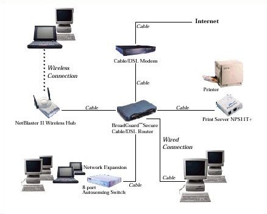

A história das redes de computadores não tem uma data inaugural única. Diferentemente de muitas outras invenções, seu surgimento foi um processo gradual, marcado por uma série de acontecimentos que, inicialmente, nem estavam diretamente conectados entre si. O conceito que mais tarde seria refinado e implementado nasceu ainda nos anos 60, quando havia intensas pesquisas para o desenvolvimento de tecnologias voltadas para comunicação por voz. Rapidamente se percebeu que a mesma estrutura também servia para transmissão de dados, utilizando o conceito de transmissão de "pacotes" por meio de sinais elétricos em fios metálicos.

Inicialmente, o protocolo usado na ARPANET foi o NCP (Network Control Protocol), que logo se mostrou inadequado para gerenciar o grande volume de dados que o crescimento da rede exigia. Em 1972, por ocasião do lançamento oficial da ARPANET, ela era composta de 15 nós. Cinco anos depois, em 1977, já eram cerca de 100 nós, conectando computadores do Pentágono, centros de pesquisa, universidades como MIT, Harvard e Stanford, e algumas empresas como a Xerox. A primeira rede surgiu com motivação militar, mas seu desenvolvimento foi impulsionado pela utilidade que teve para a pesquisa científica e acadêmica. Foi apenas em 1983 que o TCP/IP substituiu oficialmente o NCP, marcando a transição definitiva para a Internet como a conhecemos hoje.
"Quando se fala na história das redes de computadores, diferentemente de muitos outros adventos, não há uma 'data inaugural' ou um único evento que tenha sido responsável pelo seu surgimento. Ao contrário, a sua criação e a evolução que levou a sua caracterização envolve uma série de diferentes acontecimentos, sem conexão direta entre eles. Inclusive no cenário onde primeiro se viu algo que lembrava uma rede, os computadores como os conhecemos hoje nem mesmo existiam."